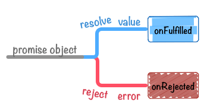

ECMAScript 6 - Promise对象
本文于 470 天之前发表，文中内容可能已经过时。
# Promise 含义
Promise 是异步编程的一种解决方案，比传统的解决方案——回调函数和事件——更合理和更强大。
它由社区最早提出和实现，ES6 将其写进了语言标准，统一了用法，原生提供了Promise对象。
Promise对象有以下两个特点。
（1）对象的状态不受外界影响。Promise 对象代表一个异步操作，有三种状态：pending（进行中）、fulfilled（已成功）和 rejected（已失败）。只有异步操作的结果，可以决定当前是哪一种状态，任何其他操作都无法改变这个状态。这也是 Promise 这个名字的由来，它的英语意思就是“承诺”，表示其他手段无法改变。
（2）一旦状态改变，就不会再变，任何时候都可以得到这个结果。Promise 对象的状态改变，只有两种可能：从 pending 变为 fulfilled 和从 pending 变为 rejected。只要这两种情况发生，状态就凝固了，不会再变了，会一直保持这个结果，这时就称为 resolved（已定型）。如果改变已经发生了，你再对 Promise 对象添加回调函数，也会立即得到这个结果。这与事件（Event）完全不同，事件的特点是，如果你错过了它，再去监听，是得不到结果的。
参考链接
http://es6.ruanyifeng.com/#docs/promise
# 基本用法
ES6 规定，Promise对象是一个构造函数，用来生成 Promise 实例。
下面代码创造了一个 Promise 实例。
1 | const promise = new Promise(function(resolve, reject) { |
Promise构造函数接受一个函数作为参数，该函数的两个参数分别是resolve和reject。它们是两个函数，由 JavaScript 引擎提供，不用自己部署。
resolve函数的作用是，将 Promise 对象的状态从“未完成”变为“成功”（即从 pending 变为 resolved），在异步操作成功时调用，并将异步操作的结果，作为参数传递出去。
reject函数的作用是，将 Promise 对象的状态从“未完成”变为“失败”（即从 pending 变为 rejected），在异步操作失败时调用，并将异步操作报出的错误，作为参数传递出去。
Promise实例生成以后，可以用 then 方法分别指定 resolved 状态和 rejected 状态的回调函数。
1 | promise.then(function(value) { |
then方法可以接受两个回调函数作为参数。
第一个回调函数是 Promise 对象的状态变为 resolved 时调用，第二个回调函数是 Promise 对象的状态变为 rejected 时调用。
其中，第二个函数是可选的，不一定要提供。这两个函数都接受 Promise 对象传出的值作为参数。
图示：
# 例子
效果图：
index.html文件：
https://jsbin.com/gamewasari/edit?html,console,output
# 结语
以上是我总结的一个简单的异步执行回调方法，有问题可以留言。
(∩_∩)